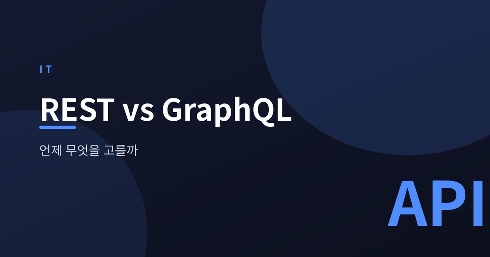
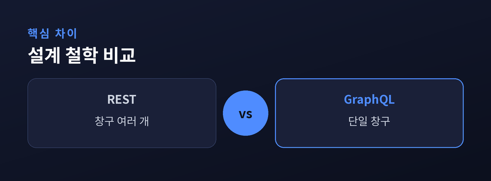
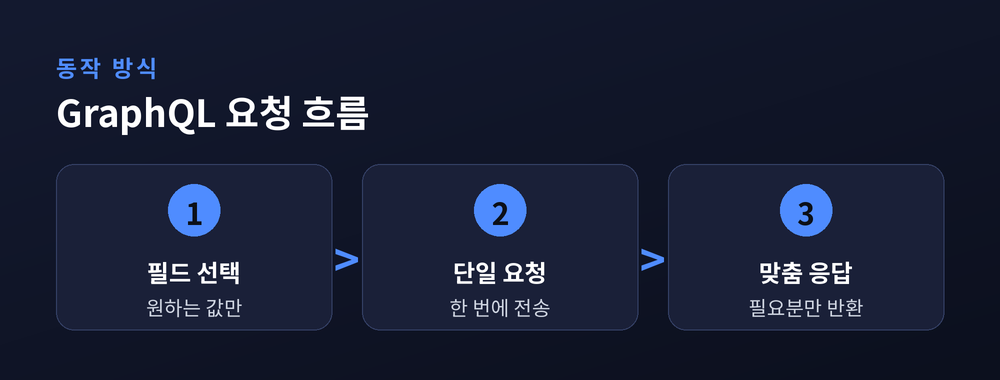
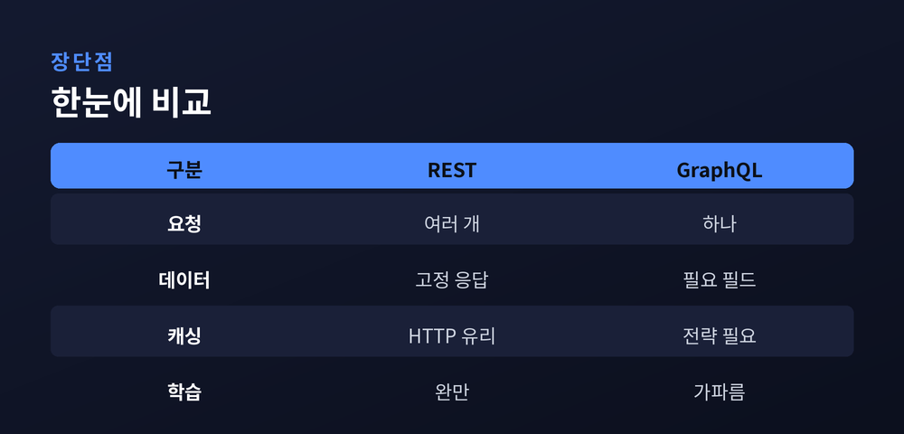

무엇을 언제 고를까

REST와 GraphQL은 모두 서버와 클라이언트가 데이터를 주고받는 방식(API 스타일)입니다.
REST는 자원마다 고유한 주소(엔드포인트)를 두고, GET·POST 같은 HTTP 메서드로 그 자원을 다룹니다.
GraphQL은 2015년 페이스북(현 메타)이 공개한 방식으로, 하나의 엔드포인트에 클라이언트가 원하는 데이터의 모양을 쿼리로 직접 기술합니다.
즉 REST가 "정해진 창구 여러 개"라면, GraphQL은 "필요한 걸 적어 내는 단일 창구"에 가깝습니다.

REST에서 자주 언급되는 문제는 오버페칭과 언더페칭입니다.
오버페칭은 화면에 이름만 필요한데 응답에 전화번호·주소까지 딸려 오는, 즉 필요 이상으로 받는 상황입니다.
언더페칭은 한 화면을 그리려고 사용자·게시글·댓글 엔드포인트를 여러 번 호출해야 하는 상황입니다.
GraphQL은 클라이언트가 필드를 골라 한 번의 요청으로 필요한 만큼만 받으므로 이 두 문제를 줄여 줍니다.
다만 그만큼 서버 쿼리 설계와 성능 관리의 부담은 커집니다.

정리하면 두 방식은 강점의 위치가 다릅니다.
| 구분 | REST | GraphQL |
|---|---|---|
| 요청 | 엔드포인트 여러 개 | 엔드포인트 하나 |
| 데이터 양 | 고정 응답 | 필요 필드만 |
| 캐싱 | HTTP 캐시 유리 | 별도 전략 필요 |
| 학습 곡선 | 완만 | 다소 가파름 |
REST는 HTTP 표준과 캐싱을 그대로 활용해 단순하고 안정적입니다.
GraphQL은 유연하지만 스키마 설계, 캐싱, 쿼리 비용 관리에 추가 노력이 듭니다.

선택은 우열이 아니라 상황에 달려 있습니다.
자원 구조가 단순하고 공개 API나 캐싱이 중요하다면 REST가 무난합니다.
화면마다 필요한 데이터가 제각각이고 모바일 등 다양한 클라이언트를 함께 지원한다면 GraphQL이 유리합니다.
두 방식을 한 서비스 안에서 함께 쓰는 하이브리드 구성도 흔합니다.
결국 팀의 숙련도와 서비스의 데이터 요구가 판단의 기준이 됩니다.